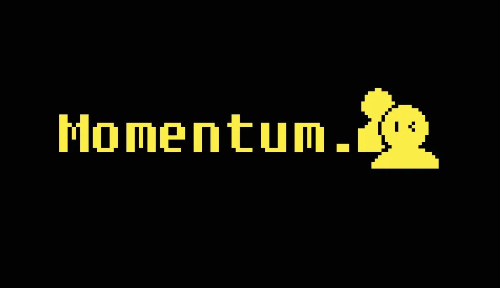
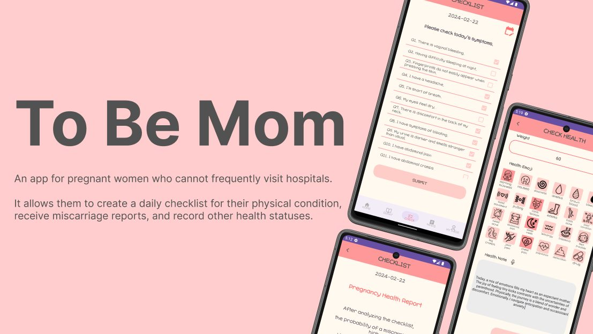

오지윤
서울대학교 경영대학원
경영정보시스템(MIS) 석사과정
AI와 비즈니스가 만나는 지점에서 일합니다. 현장에서 쓰이는 AI 도구를 만들고, 기업 챗봇이 기대는 데이터를 어떻게 신뢰할 수 있게 만들지 연구합니다.
소개
서울대학교 경영대학원 IDSLab(지도교수: 박진수 교수)에서 석사과정을 밟으며, RAG 기반 챗봇 같은 기업용 AI 시스템이 사용하는 QA 데이터셋의 품질을 어떻게 평가할지 연구하고 있습니다. 학부에서는 성신여자대학교 AI융합학부에서 공부했고, NLP와 생성 모델 연구실에서 연구를 경험했으며, AI 인턴으로 사내 문서 검색 챗봇을 개발했습니다.
학력
서울대학교
경영학 석사(경영정보시스템) · IDSLab · GPA 4.10 / 4.3
성신여자대학교
AI융합학부 학사 · GPA 4.11 / 4.5
경력
항목을 누르면 세부 내용을 볼 수 있습니다.
하계 연구 인턴
성균관대학교 자연어처리 연구실
2025.07 – 2025.08
하계 연구 인턴
성균관대학교 자연어처리 연구실
- 다국어 QA 데이터셋 구축·검증: 한–영 지문 번역 정제, 지문–질문 관련성 라벨링, 데이터 품질 개선
- 주간 세미나에서 RAG·생성 기법(Generative Retrieval, Chain-of-Thought)과 NLP를 위한 강화학습 기법(PPO, DPO, GRPO, RLHF) 학습
- KoWiki와 대화 데이터에 LDA·BERTopic 파이프라인을 구현하고 coherence·diversity 지표로 평가
- 지도교수: 고영중 교수
AI 인턴
쌍용리프트
2024.06 – 2024.12
AI 인턴
쌍용리프트
- 문서 검색을 효율화하고 고객 응대 시간을 줄이는 AI 기반 사내 챗봇 설계·개발
- 마케팅 부서 직원을 대상으로 업무 효율화를 위한 실용적인 AI 활용 방안 자문
- 중소기업에서 AI 도입이 즉각적이고 눈에 보이는 효과를 낸다는 것을 현장에서 체감
학부 연구생
성신여자대학교 AIDEN Lab
2024.06 – 2025.12
학부 연구생
성신여자대학교 AIDEN Lab
- Hugging Face Diffusion Course와 diffusers 라이브러리로 확산 모델의 이론과 구현 학습
- 최신 텍스트-비디오 생성 모델(Lumiere, Stable Video Diffusion)을 비교하고, DiT: Scalable Diffusion Models with Transformers(ICCV 2023) 논문 리뷰·발표
- 지도교수: 오장민 교수
개인 연구 (UROP)
성신여자대학교
2024.09 – 2025.01
개인 연구 (UROP)
성신여자대학교
- 인스타그램 이미지와 해시태그의 일치 여부를 예측하는 멀티모달 모델 설계
- CLIP·Ko-CLIP으로 유사도 기반 분류, 분류기만 학습, 전체 파인튜닝을 비교해 유사도 기반 분류가 가장 우수함을 확인
- Ko-CLIP의 사전학습 및 데이터 정렬 한계를 분석하고, 파인튜닝을 통한 개선 가능성 제시
프로젝트

최신 · 생성형 AI 수업
VIZY — K-뷰티 AI 에이전트
얼굴·제품 사진 속 메이크업 색을 실제 제품과 매칭하고, RAG 기반 에이전트로 개인화된 추천과 그 이유를 설명합니다.
React · FastAPI · pgvector · OpenAI API
자세히 보기 →
코드잇 파워부스트 데모데이 2위
Momentum
큰 목표를 매일의 ‘모먼트’로 쪼개 주고, GPT로 세부 목표를 추천하는 목표 관리 앱
자세히 보기 →
AI융합학부 IT 경진대회 2위
MediMate
약 포장지를 OCR로 읽어 유효기간을 관리해 주는 모바일 앱
자세히 보기 →캡스톤 디자인 · 팀장
Ezpage
외국 지폐·동전을 YOLOv8로 인식해 원화로 환산해 주는 여행 경비 앱
자세히 보기 →
Google Solution Challenge 2024
To Be Mom
주차별 체크리스트와 Gemini 기반 챗봇을 갖춘 임산부 건강관리 앱
자세히 보기 →
NLP · 리뷰 분석
Camchelin
식당 리뷰에서 감성과 키워드를 추출하고, 카테고리별 요약 문장을 생성
자세히 보기 →NLP 경진대회 · Dacon
난독화된 한글 리뷰 복원
자모 단위로 난독화된 리뷰를 한국어 PLM과 2단계 디코딩으로 복원
자세히 보기 →그 외: Diffusion Model 스터디 · 수업 프로젝트: 추천 시스템, 빅데이터 분석, 자료구조
수상 및 장학
- 2026.02성신장학금(학업성적우수) — 4학년 2학기
- 2025.02제1회 코드잇 파워부스트 데모데이 2위
- 2025.02대학혁신지원사업 활동장학금(UROP)
- 2025.02성신장학금(학업성적우수) — 3학년 2학기
- 2024.08AI융합학부 IT 경진대회 고학년부 2위
- 2024.08성신장학금(학업성적우수) — 3학년 1학기
기술
- AI / ML
- PyTorch, Hugging Face Transformers, YOLOv8, OpenAI & Gemini API
- 프로그래밍
- Python, JavaScript, TypeScript, Kotlin, HTML/CSS
- 프레임워크
- React, React Native
- 도구
- Git, Google Colab, VS Code, Figma
- 어학
- 한국어(모국어), 영어(TOEIC 900, TEPS 342)
연락처
이메일로 연락 주시면 가장 빠르게 답변드립니다: jynoh825@gmail.com